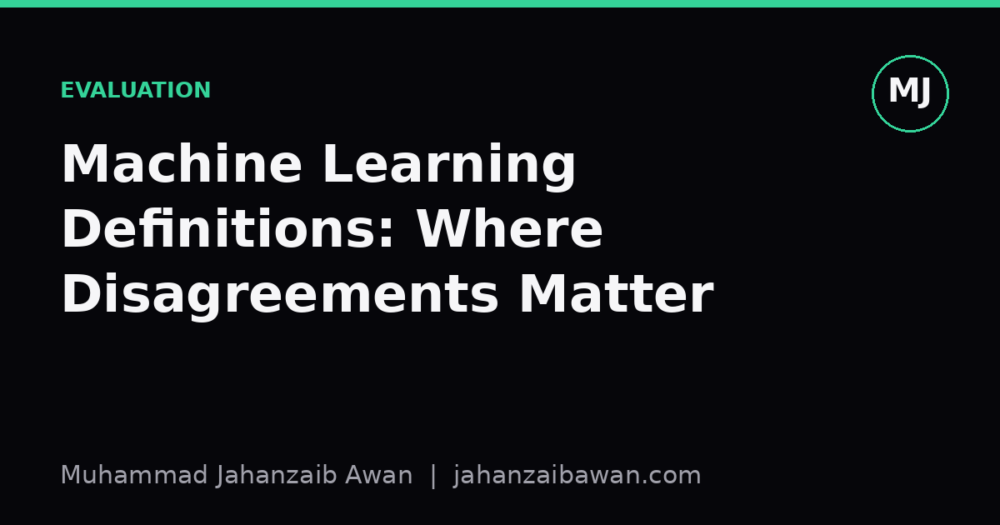

Machine Learning Definitions: Where Disagreements Matter
Textbooks rarely agree on what machine learning is, and most of the time it does not matter. Here is where it actually does.

Why the definitions diverge in the first place
Open three machine learning textbooks and you will get three slightly different definitions. One frames learning as improving performance on a task through experience, measured by some performance metric. Another frames it as estimating a function from data that generalises to unseen examples drawn from the same distribution. A third, closer to statistical learning theory, frames it as minimising expected risk when you only have access to empirical risk on a finite sample. These sound like restatements of the same idea, and most of the time they are. The trouble is that each framing quietly smuggles in different assumptions about what success looks like, and those assumptions surface the moment you try to evaluate a model rigorously.
The experience-and-performance definition, the one most students meet first, is deliberately loose. It says nothing about distributions, independence, or identical conditions between training and deployment. That looseness is fine for an introductory course, but it is exactly the gap that lets people build models that technically fit the definition while being useless in practice. A model trained on data that leaks future information into the training set can show improving performance on its task by every naive measure, and still be learning nothing transferable. The definition does not forbid this, because it never specified what kind of experience counts.
The statistical learning framing is stricter precisely because it was built by people worried about exactly that failure mode. It insists on a fixed, unknown data-generating distribution, and it defines success as low expected risk under that distribution, not low error on whatever sample you happened to collect. This is a meaningfully different claim. It rules out, by construction, the idea that a model which merely memorises its training sample well has learned anything at all.
A worked example: the same model, two verdicts
Imagine a model trained to predict whether a loan applicant will default, using five years of historical records. Suppose the data is shuffled randomly before an eighty-twenty train-test split, and the model reaches an accuracy of ninety-one per cent on the held-out twenty per cent. Under the loose, performance-based definition, this looks like a clean success story: the model improved its performance on the task through experience, exactly as described.
Now suppose, as is common in practice, that the records are not independent. Applicants who were co-signers on the same household loan appear on both sides of the split, and macroeconomic conditions in a given month mean that records from the same quarter are correlated with each other in ways the random split ignores. Under the statistical learning definition, this is not a valid estimate of expected risk at all, because the test set is not an independent draw from the same distribution as genuinely unseen future applicants. The ninety-one per cent figure might fall to seventy-eight per cent under a split that respects time order and household grouping, which is a drop large enough to change whether the model is worth deploying.
Both textbooks would call the original training process machine learning. Only one of them gives you the conceptual vocabulary to say why the ninety-one per cent was never a trustworthy number in the first place. That is the disagreement that matters: not a philosophical quibble about terminology, but a difference in whether the definition forces you to ask about the independence and representativeness of your evaluation data before you trust a result.
Where else the gap shows up
The same split in emphasis reappears in how textbooks treat inductive bias. Definitions centred on function approximation tend to foreground the hypothesis space: what family of functions can the model even represent, and what assumptions does that family encode about the problem. Definitions centred on experience and performance often skip this entirely, treating the model as a black box that either performs well or does not. In practice, knowing the inductive bias matters enormously when you are choosing a baseline. A linear model with the right bias can outperform a far more flexible model on a small, noisy dataset, and a definition that never asks you to think about hypothesis spaces will not prompt you to try the simpler option first.
There is also disagreement about whether learning requires generalisation at all, or whether pattern extraction from a fixed dataset counts on its own terms. This matters for interpretability and clustering work, where there may be no clean notion of a held-out distribution, and no natural test set at all. A definition built entirely around risk minimisation on future data struggles to accommodate this kind of work cleanly, while a looser definition accommodates it too easily, by not asking hard questions about what the discovered patterns actually mean or whether they would replicate on a second sample.
A third place the gap shows up, quieter but just as consequential, is in how textbooks treat the test set itself. Some definitions treat the test set as a neutral oracle: whatever the model scores on it is the truth about how good the model is. Others treat it as a single noisy sample from a distribution, meaning the reported number itself has a confidence interval around it that is rarely reported. A model that scores eighty-four per cent on one test split and seventy-nine per cent on a different random split of the same size has not necessarily changed; the five-point gap may simply be sampling variance in a modest test set. Textbooks that treat the number as sacred encourage overconfidence in single-split results, while those that treat it as an estimate push you towards repeated resampling or cross-validation before drawing conclusions.
The practical takeaway
None of this means the textbook definitions are wrong. They are answering different questions, written for different purposes, and a short definition at the start of a chapter was never meant to carry the full weight of rigorous methodology. The useful move is to stop asking which definition is correct and start asking which assumptions a given definition quietly requires you to check. Does it assume independence between training and test data. Does it assume a fixed distribution that will not drift before deployment. Does it treat a single reported score as ground truth or as a noisy estimate.
When I evaluate a model now, I treat the textbook definition as a checklist rather than a sentence to be recited. If a definition emphasises expected risk, I ask whether my split genuinely approximates an independent draw from the deployment distribution, and I check for leakage through shared entities, time order, or duplicated records. If a definition emphasises improving performance through experience, I ask what exactly counts as experience here, and whether that experience could have quietly included information the model should never have seen. The disagreement between textbooks is not academic noise; it is a map of the places where sloppy evaluation most often hides.